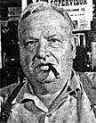
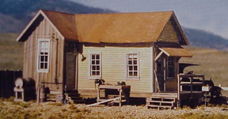
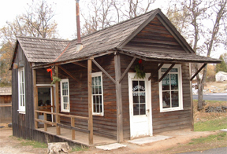

The California Store is on the north side of the south section of the lot, which started out as 2 lots:

Carlo's parents were Giovanni B. Franco & Maddelana Neno of Italy.
Carlo Franco - 1950s.
1961 May 19 - Carlo Franco dies of a stroke.

The Miner's Cabin for HO Scale RR.
1962? Building converted to display of a "miner's cabin".
2000 Cabin restored by park staff.
2004 The cabin is modified into the "California Store" and becomes a static display used by docents to interpret an old dry goods merchant of the early 1850s.


© Floyd D. P. Øydegaard.
The California Store - 2007.

This page is created for the benefit of the public by
Floyd D. P. Øydegaard.
Email contact:
fdpoyde3 (at) yahoo (dot) com
A WORK IN PROGRESS,
created for the visitors to the Columbia State Historic park.
© Columbia State Historic Park & Floyd D. P. Øydegaard.